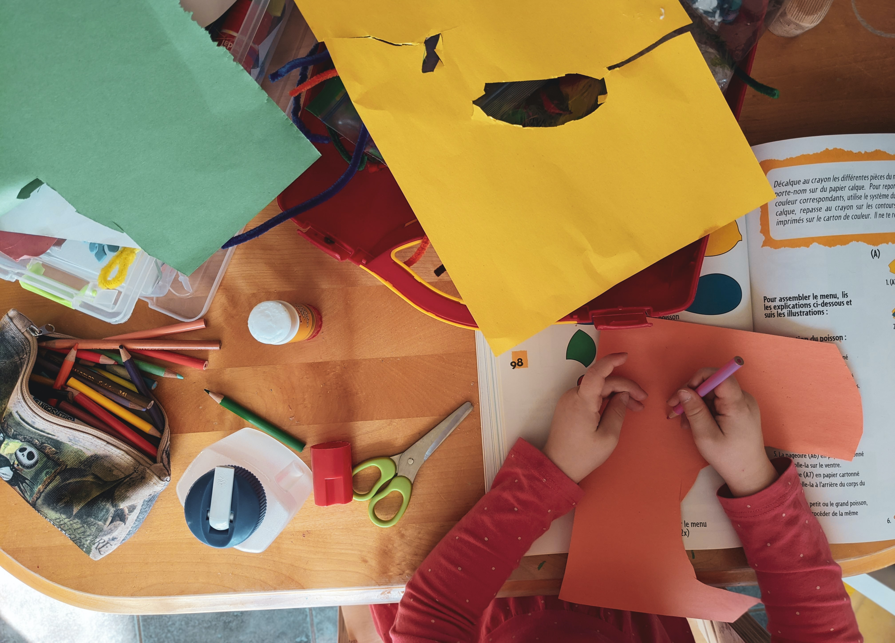
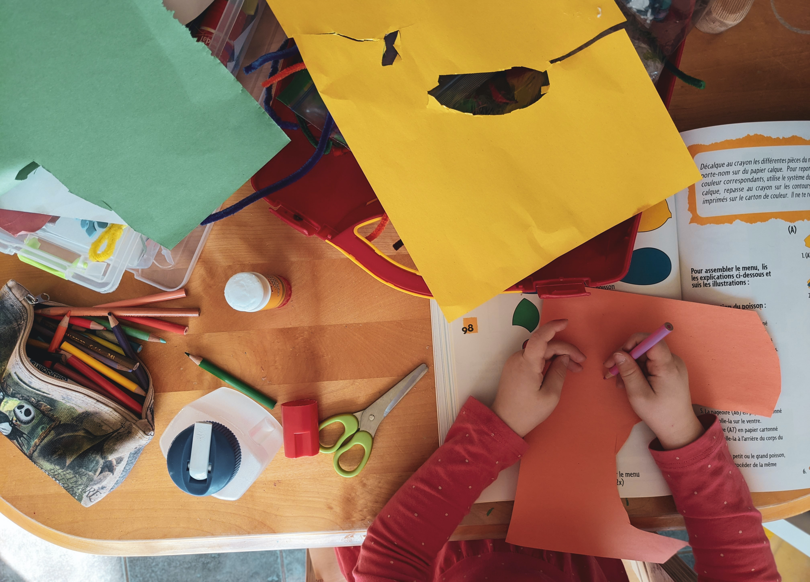

Propuesta Educativa
¡Bienvenidos a Untref School, queridos padres y madres!
En nombre de todo el equipo educativo, me complace presentarles nuestra propuesta educativa,
que tiene como objetivo principal proporcionar a sus hijos una experiencia de aprendizaje
significativa, estimulante y enriquecedora.
En Untref School, creemos firmemente en el desarrollo integral de cada niño y niña.
Nuestro enfoque se basa en tres pilares fundamentales:
- Aprendizaje personalizado: Reconocemos que cada estudiante es único, con sus intereses,
habilidades y ritmos de aprendizaje. Por lo tanto, nuestro equipo docente se esfuerza por
adaptar las estrategias y recursos educativos para satisfacer las necesidades individuales
de cada niño. Creemos que al nutrir sus talentos y apoyarlos en sus desafíos, fomentamos
el amor por el aprendizaje y el crecimiento constante.
- Enfoque práctico y experiencial: Sabemos que los niños aprenden mejor cuando pueden
conectar el conocimiento con su entorno y experiencias personales. Nuestra metodología de
enseñanza se basa en el aprendizaje activo, utilizando proyectos, experimentos y
actividades prácticas para explorar conceptos y adquirir habilidades. Buscamos fomentar
la curiosidad y el pensamiento crítico en cada paso del camino.
- Formación en valores y ciudadanía: Más allá del desarrollo académico, nos esforzamos por
inculcar valores éticos y cívicos en nuestros estudiantes. Promovemos la empatía, la
tolerancia, el respeto y la responsabilidad social. Queremos formar ciudadanos comprometidos
con el bienestar de la comunidad y el mundo que los rodea.
Nuestro plan de estudios se construye sobre una base sólida en materias tradicionales
como matemáticas, ciencias, lenguaje y estudios sociales. Además, ofrecemos una amplia gama
de actividades extracurriculares que abarcan desde deportes y artes hasta tecnología y
actividades ambientales.
También damos gran importancia al uso responsable de la tecnología y la alfabetización digital.
Utilizamos recursos digitales y herramientas tecnológicas de manera creativa y segura para
enriquecer el proceso de aprendizaje y preparar a nuestros estudiantes para un mundo en
constante cambio.
En Untref School, promovemos una relación cercana y colaborativa entre la escuela, los padres
y madres, y la comunidad. Creemos que la educación es un esfuerzo conjunto y valoramos sus
aportes y participación en la formación educativa de sus hijos.
Nos enorgullecemos de contar con un equipo de docentes altamente capacitados y dedicados,
así como de unas instalaciones seguras y propicias para el aprendizaje.
En resumen, en Untref School buscamos ser un lugar donde sus hijos puedan descubrir su
potencial, desarrollar sus talentos y habilidades, y cultivar una actitud positiva hacia
el aprendizaje y el mundo que los rodea.
¡Gracias por confiar en nosotros como sus aliados en la educación de sus hijos! Estamos
ansiosos por compartir juntos este emocionante viaje de crecimiento y aprendizaje.
¡Bienvenidos a Untref School!


 
